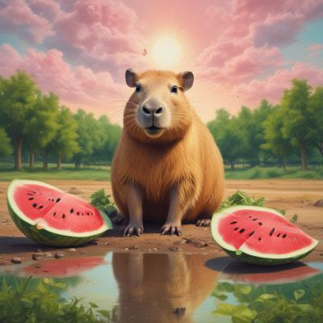

Грызуны с арбузом
Привет!
Можно ли хомякам арбуз?
Маленький кусочек не повредит, но следите, чтобы хомяк не перепачкался в арбузном соке. Большое количество может вызвать понос, также вреден избыток сахара. Можно давать промытые и подсушенные семечки арбуза или дыни. Корку давать нельзя, так как в ней скапливаются нитраты и нитриты.

Почему арбуз вреден хомякам
Даже если хомяк ест арбуз с удовольствием, то это не означает, что он полезен для грызуна. Поводов для отказа от ягоды много, все руководства по правильному питанию призывают не кормить хомячков этим продуктов. Такое требование обусловлено тем, что:
С высокой долей вероятности будут забиваться защечные мешочки, что впоследствии может привести к поломке зубов;
Удобрения, с помощью которых стимулируется рост культуры, проникают в мякоть и могут вызвать сильное отравление вплоть до летального исхода;
Чрезмерное количество глюкозы, что исключает возможность давать арбуз джунгарикам, имеющим генетическую склонность к диабету;
Излишняя жидкость может вызывать расстройство работы почек и мочеполовой систем у всех пород, включая джунгарских и сирийских хомяков;
Состав арбузной мякоти также нарушает функционирование пищеварительного тракта маленьких любимцев, вызывает понос или запор, которые могут окончиться гибелью питомца.
В каких случаях можно давать хомяку арбуз
Однако, всегда есть исключения. В случае, когда хозяева живут в местности, где выращивается большая ягода, допускается давать хомякам арбуз при условии соблюдения определенных правил. Культура должна быть выражена самостоятельно хозяином хомячка, только это сохраняет уверенность в том, что для роста не использовались вредные пестициды и нитраты.
Также необходимо учитывать, что подобное лакомство можно предлагать изредка. Крошечного кусочка будет достаточно, чтобы раз в 2 недели побаловать питомца.
Арбузные корки – как влияют на хомяков
Арбузные корки впитывают вредные добавки и стимуляторы роста быстрее, чем мякоть. Поэтому их следует полностью исключить их рациона грызуна. Даже в случае самостоятельного выращивания арбуза рекомендуется отказаться от такого угощения.
img